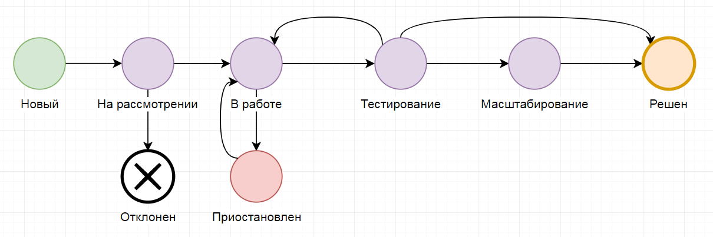

Ключевая внутренняя ценность компании – стремление к росту и развитию. В изменениях участвует множество заинтересованных сторон, поэтому вопрос требует системного подхода.
Изменение:
● Развитие бизнес процесса
● Проект
Бизнес-процесс — это регулярно повторяющаяся последовательность взаимосвязанных мероприятий, при выполнении которых используются ресурсы внешней среды, создается ценность для потребителя (как внешнего так и внутреннего) и выдается ему результат
Развитие бизнес - процесса - это небольшие цикличные изменения, для реализации которых используются инструменты управления задачами.
Проект – это уникальное предприятие, предполагающее координированное выполнение взаимосвязанных действий, для достижения целей в условиях временных и ресурсных ограничений.
Проекты - сложные, уникальные изменения; для реализации Проектов используются инструменты управления проектами.
Ключевые признаки проекта
● Требует сложной коммуникации нескольких подразделений. (необходимо учесть сложные связи процессов)
● Требует ресурсы на реализацию превышающие 14 дней (в задаче много изменений и значит много рисков, их нужно учесть)
● Высокая степень неопределенности. (не ясно что нужно сделать, необходимо корректно выделить проблематику и выбрать оптимальное решение)
● Ограничение по срокам
Проекты делим на:
● Блокирующие (0 приоритет - мобилизуем все необходимые ресурсы)
● Стратегические (проекты повышенной важности)
● Проекты (остальные)
Ключевые фазы проекта:
● Инициация
● Планирование, реализация и контроль
● Завершение
В течение срока проекта команда проекта под руководством Руководителя проекта (и КУП) в тесном взаимодействии с Заказчиком, с учетом мнения Стейкхолдеров работает над проектом.
Инициация:
● Подготовка Устава проекта Заказчиком
○ Определение заинтересованных сторон (Стейкхолдеров)
○ Определение ПМ
○ Уточнение устава
○ Формирование КУП
● Защита устава
● Информирование участников о старте проекта
Планирование и реализация:
● Формирование команды проекта
● Уточнение требований
● Определение ключевых вех проекта
● Планирование: матрица ответственности, структура проекта, структура работ по проекту
● Работа с рисками
● Информирование участников о достижении ключевых вех
Завершение проекта
● Передача результатов Заказчику
● Информационное письмо о завершении проекта
Руководитель проекта (проектный менеджер) - лицо, ответственное за управление проектом, несет ответственность за достижение целей проекта в рамках бюджета, в срок и с заданным уровнем качества. Обеспечивает ежедневное управление проектом, командой проекта, в разрезе всех основных управленческих функций (управление по срокам, затратам, рискам и др.).
Функции руководителя проекта:
● Оперативное управление проектом: планирование, координация работ, контроль работ и исполнение.
● Набор команды проекта, распределение ролей, постановка и контроль задач, командообразование.
● Управление изменениями, эскалация проблем.
● Подведение итогов и роспуск команды проекта.
Заказчик проекта - сторона, заинтересованная в осуществлении проекта и достижении его целей. Будущий владелец результатов проекта. Заказчик определяет основные требования к результатам Для целей проектов - Заказчик это представитель группы заказчиков, он обязан учесть их требования.
Функции Заказчика проекта:
● Определение и утверждение целей и результатов проекта.
● Определение требований к продукту проекта.
● Согласование Устава проекта и Плана проекта;
● Согласование лимитов финансирования проекта, ограничений, предложений и допущений.
● Выполнение арбитражных функций (при необходимости).
● Приемка продукта (и результатов) проекта.
● Использование выгод и результатов проекта.
Команда проекта – группа специалистов и организаций, непосредственно работающих над осуществлением проекта в тесном контакте друг с другом. Главная задача команды проекта - выполнение всех работ, необходимых для достижения целей проекта.
Команда управления проектом (КУП) объединяет членов команды проекта, которые непосредственно вовлечены в управление проектом и принятие управленческих решений. Как правило, в команду управления входят эксперты из различных предметных областей: технической, финансовой, административной и пр.
Заинтересованные стороны (Стейкхолдеры): внешние заинтересованные участники проекта. Мнение или возможные действия, которых необходимо учитывать для достижения цели проекта.
Вся информация о проекте хранится в карточке проекта. Команда проекта поддерживает актуальность статусов проекта, наполняет нужной информацией.
|
Фаза проекта |
Статус в SDMS |
|
Инициация |
Новый - заполняются основные данные. Работа над проектом еще не начата. На рассмотрении - начата предпроектная работа. Определяются заинтересованные стороны, формируется КУП, делается укрупненное планирование, готовится устав, проводится защита проекта. Обязательно: утвержденный устав. |
|
Планирование, реализация и контроль |
В работе - запущен проект. Определение ключевых вех, планирование и реализация проекта. Обязательно: контрольные точки по вехам, данные проекта для текущего состояния проекта, информационные сообщения о начале проекта и о прохождении вех. Тестирование - переход всех продуктов проекта в тестирование. Обязательно информационное сообщения о переходе в тестирование. Масштабирование - передача результатов проекта на масштабирование в дивизионы. Обязательно наличие данных проекта для масштабирования. Обязательно определить ответственных в дивизионах. Приостановлен - статус, фиксирующий приостановку работ над проектом. |
|
Завершение |
Решен - финальный статус, проект реализован в достаточном для Заказчика виде. Обязательно официальное закрытие проекта, информационное сообщения о закрытии. Отклонен - финальный статус, работы над проектом прекращены. |
